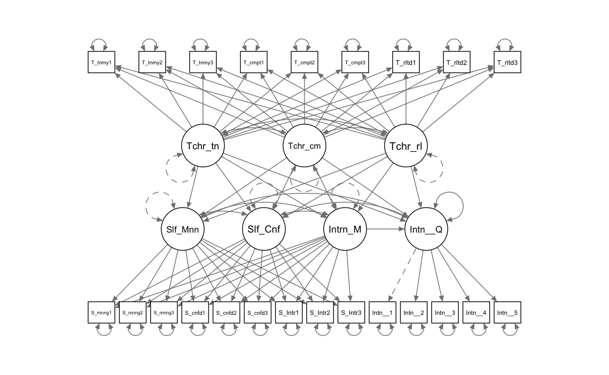

here::here("code", "_common.R") |>
source()
# Load packages
if (!requireNamespace("pacman")) install.packages("pacman")
pacman::p_load(semTools, tidyr, psych, lavaan, kableExtra, stringr)59 Exploratory structural equation modelling
In questo capitolo imparerai a:
- Comprensione delle differenze tra l’ESEM completo e il set-ESEM, con quest’ultimo come compromesso tra CFA e ESEM per gestire specifici blocchi indipendenti di variabili.
- Giustificazione dell’uso del set-ESEM nei modelli strutturali come alternativa al CFA.
- Identificazione degli effetti distorti e dei coefficienti di percorso attenuati nei modelli CFA a causa della multicollinearità, e come il set-ESEM riduce questo problema.
- Uso dell’invarianza di misura nei modelli longitudinali per garantire la stabilità delle misurazioni nel tempo, applicabile in set-ESEM.
- Benefici del set-ESEM, inclusi miglior fit del modello, validità discriminante più accurata e riduzione degli errori di tipo II nei modelli strutturali.
- Implementazione pratica in R con lavaan.
Prerequisiti
- Leggere il capitolo Structural Equation Modeling del testo di Petersen (2024).
- Leggere l’articolo:
- Marsh, H., & Alamer, A. (2024). When and how to use set‐exploratory structural equation modelling to test structural models: A tutorial using the R package lavaan. British Journal of Mathematical and Statistical Psychology, 77, 459–476.
Preparazione del Notebook
59.1 Introduzione
L’Exploratory Structural Equation Modeling (ESEM) è una tecnica statistica innovativa che combina i punti di forza dell’analisi fattoriale esplorativa (EFA) e dell’analisi fattoriale confermativa (CFA). Introdotta da Asparouhov e Muthén nel 2009 e successivamente sviluppata da Marsh et al. (2009, 2014), l’ESEM consente di modellare strutture fattoriali complesse mantenendo una flessibilità analitica che supera i limiti tradizionali della CFA. Questa tecnica si rivela particolarmente vantaggiosa in presenza di item con fonti di varianza multiple, come sottolineato da Morin et al. (2013), grazie alla sua capacità di migliorare l’adattamento del modello, ridurre le correlazioni spurie tra fattori e rappresentare in modo realistico le saturazioni fattoriali incrociate.
L’efficacia dell’ESEM è stata dimostrata in numerosi ambiti della psicologia, tra cui la psicologia clinica, educativa, industriale e della salute, dove spesso supera il CFA in termini di adattamento e interpretabilità del modello. Tuttavia, in contesti specifici, potrebbe essere necessario introdurre restrizioni al modello ESEM completamente libero. Questo ha portato all’evoluzione del set-ESEM (Marsh et al., 2020), una tecnica che integra in modo strategico elementi di ESEM e CFA in un quadro analitico unificato.
In questo capitolo, esploreremo i fondamenti e le applicazioni dell’Exploratory Structural Equation Modeling (ESEM), seguendo il tutorial proposto da Marsh & Alamer (2024).
59.2 EFA, CFA, ESEM e Set-ESEM
L’analisi fattoriale esplorativa (EFA) e l’analisi fattoriale confermativa (CFA) rappresentano i due approcci principali per indagare le strutture latenti nei dati. L’EFA, introdotta da Spearman (1904) e sviluppata ulteriormente da Thurstone (1935, 1947), era inizialmente conosciuta semplicemente come “analisi fattoriale.” Solo con l’introduzione della CFA si è stabilita una distinzione tra l’approccio esplorativo (EFA) e quello confermativo (CFA). La CFA è diventata uno strumento centrale nella psicometria grazie alla sua capacità di valutare l’adattamento del modello, gestire dati mancanti con metodi avanzati e confrontare modelli teorici alternativi. Tuttavia, uno dei suoi principali limiti è l’ipotesi rigida che ogni item carichi su un solo fattore, ignorando potenziali carichi incrociati.
Questo limite ha portato allo sviluppo dell’Exploratory Structural Equation Modeling (ESEM) da parte di Asparouhov e Muthén (2009). L’ESEM combina la flessibilità dell’EFA con la potenza analitica della SEM, consentendo carichi incrociati tra i fattori e offrendo un migliore adattamento ai dati psicometrici complessi. Questo approccio si è dimostrato superiore alla CFA in numerosi studi, migliorando l’adattamento del modello e sostenendo la validità discriminante tra i fattori. Una meta-analisi recente condotta da Gegenfurtner (2022) su 158 studi ha confermato che l’ESEM supera la CFA sia per bontà di adattamento sia per validità discriminante.
L’ESEM è ormai uno strumento consolidato nella psicometria moderna, dimostrando la sua efficacia nel modellare strutture fattoriali complesse. Grazie alla sua capacità di rappresentare accuratamente le correlazioni e le regressioni tra fattori e di utilizzare tutte le informazioni disponibili a livello degli indicatori, si è affermato come un’alternativa valida e spesso preferibile alla CFA.
Tuttavia, l’ESEM, pur essendo più flessibile, può risultare meno parsimonioso rispetto alla CFA in alcune situazioni. Per questo motivo è stato sviluppato il set-ESEM (Marsh et al., 2020), un’evoluzione che bilancia la flessibilità dell’ESEM con una struttura più rigorosa, tipica della CFA. Il set-ESEM utilizza tecniche di rotazione come la geomin rotation o il target rotation per limitare i carichi incrociati non essenziali, rendendo il modello più parsimonioso e adatto a specifiche esigenze empiriche.

59.3 Situazioni in cui il Set-ESEM è Preferibile all’ESEM Completo
In alcune situazioni, l’ESEM completo potrebbe non essere l’approccio ottimale per un’analisi. Questo accade quando è necessario garantire che specifici insiemi di fattori e item siano distinti da altri insiemi non correlati. Per affrontare tali scenari, si può utilizzare il set-ESEM, un approccio introdotto da Marsh et al. (2020) che permette di creare sottoinsiemi di ESEM all’interno di un modello più ampio. Il set-ESEM bilancia la flessibilità dell’ESEM completo con la struttura più rigorosa della CFA, offrendo un compromesso ideale in termini di adattamento del modello, parsimonia e definizione chiara dei modelli di misurazione. Di seguito, descriviamo due situazioni reali in cui il set-ESEM può risultare preferibile, basandoci su dati empirici.
59.3.1 1. Item relativi a costrutti teoricamente distinti
La prima situazione riguarda dataset che includono item derivati da costrutti concettualmente distinti o appartenenti a teorie differenti. Ad esempio, consideriamo un dataset che misura le tre necessità psicologiche di base—autonomia, competenza e relazionalità—utilizzando la scala BPN-L2 (Alamer, 2022), insieme a due costrutti di perseveranza nello sforzo e coerenza dell’interesse, derivati dalla teoria del grit (Duckworth et al., 2007) e misurati con la scala L2-grit (Alamer, 2021b). Poiché le necessità psicologiche di base e il grit si fondano su teorie con obiettivi e funzioni differenti, stimare carichi incrociati tra i loro item risulterebbe inappropriato. Per esempio, i fattori delle necessità psicologiche sono influenzati dal contesto sociale, mentre il grit è considerato un tratto stabile della personalità.
In queste circostanze, il set-ESEM consente di suddividere il modello in due blocchi: uno dedicato ai tre fattori delle necessità psicologiche, con carichi incrociati tra loro ma non con gli item del grit, e un secondo blocco per i due fattori del grit, senza carichi incrociati con le necessità psicologiche. Questo approccio mantiene una maggiore parsimonia, preservando sia la coerenza teorica sia l’accuratezza empirica.
59.3.2 2. Costrutti rilevanti misurati in più momenti temporali
Il secondo scenario in cui il set-ESEM è consigliato riguarda analisi longitudinali, in cui i dati provengono da costrutti misurati in più momenti temporali. In questi casi, i carichi incrociati dovrebbero essere stimati solo tra item relativi allo stesso momento temporale. Ad esempio, consideriamo un dataset che misura passione armoniosa, passione ossessiva e autonomia in due momenti distinti. Questi costrutti sono correlati concettualmente, rendendo ragionevoli i carichi incrociati all’interno dello stesso momento. Tuttavia, permettere carichi incrociati tra item di momenti diversi sarebbe teoricamente inappropriato e tecnicamente problematico, introducendo effetti di confondimento.
Inoltre, nelle analisi longitudinali SEM è consuetudine correlare i residui degli stessi item nel tempo (Marsh & Hau, 1996). Utilizzando il set-ESEM, è possibile preservare la flessibilità analitica dell’ESEM mantenendo il rigore strutturale necessario per evitare interpretazioni distorte.
59.4 Necessità Psicologiche di Base e Percezione del Sé
Per illustrare il primo scenario descritto in precedenza, esaminiamo uno studio condotto su 269 studenti sauditi che imparano l’inglese come seconda lingua (L2) in un’università pubblica saudita (Marsh & Alamer, 2024). I partecipanti, di età compresa tra 18 e 20 anni (M = 18.5), parlavano arabo come lingua madre e hanno completato un questionario online. Lo studio utilizza il set-ESEM per analizzare i dati, dimostrando come questo approccio possa superare sia l’ESEM completo che la CFA in termini di adattamento del modello e precisione nelle stime.
59.4.1 Struttura del Modello
Lo studio si basa su due blocchi teorici di costrutti:
Necessità Psicologiche di Base (BPN):
Questo blocco include autonomia, competenza e relazionalità, tre fattori derivati dalla teoria delle necessità psicologiche di base (Ryan & Deci, 2017; Noels, 2023). Gli item valutano la percezione degli studenti sull’insegnante come promotore di questi tre fattori.Percezione del Sé:
Questo blocco comprende senso di significato, senso di sicurezza e motivazione intrinseca, costrutti associati ai risultati positivi delle BPN. La letteratura suggerisce che quando gli studenti percepiscono l’insegnante come un promotore delle BPN, si osserva un aumento della motivazione intrinseca, del senso di significato e della sicurezza (Alamer, 2022; Alamer & Al Khateeb, 2023; Guay et al., 2015).
59.4.2 Distinzione Concettuale
Ai partecipanti è stato chiesto di valutare sia la percezione dell’insegnante come promotore delle BPN, sia la loro percezione personale in termini di senso di significato, sicurezza e motivazione intrinseca. Questa distinzione concettuale giustifica l’assenza di carichi incrociati tra i due blocchi di item:
- Gli item relativi alle BPN si concentrano sull’insegnante e riflettono l’interazione sociale.
- Gli item relativi alla percezione di sé misurano costrutti soggettivi e individuali.
Consentire carichi incrociati tra questi due domini sarebbe teoricamente ingiustificato, data la loro natura distinta.
59.4.3 Variabile di Esito
Lo studio include anche l’intenzione di abbandonare il corso come variabile di esito. Questo costrutto rappresenta un indicatore pratico delle implicazioni educative delle percezioni relative all’insegnante e al sé.
59.4.4 Analisi dei Modelli
I modelli alternativi analizzati nello studio—uno basato su CFA e l’altro su set-ESEM—sono illustrati nella Figura fig-set-esem-cfa. L’analisi dimostra che il set-ESEM bilancia efficacemente rigore teorico e flessibilità empirica, fornendo stime più affidabili delle relazioni tra variabili latenti e risultati migliori rispetto agli approcci tradizionali.
Strumenti di Misura
Per valutare i costrutti oggetto di studio, sono state utilizzate diverse scale validate, ognuna composta da specifici item rappresentativi.
-
BPN-L2 (Alamer, 2022):
Questa scala misura le tre necessità psicologiche di base — autonomia, competenza e relazionalità — ciascuna con tre item. Esempi:-
Autonomia: “Il mio insegnante ci permette di scegliere i compiti di apprendimento linguistico” (ω = .75).
-
Competenza: “Il mio insegnante ci dice che siamo capaci di imparare l’inglese” (ω = .75).
- Relazionalità: “Il mio insegnante di inglese è amichevole e cordiale con noi” (ω = .91).
-
Autonomia: “Il mio insegnante ci permette di scegliere i compiti di apprendimento linguistico” (ω = .75).
-
Motivazione intrinseca (SDT-L2; Alamer, 2022):
Questo costrutto è stato misurato tramite tre item, come:- “Imparo l’inglese perché mi piace” (ω = .91).
-
Senso di sicurezza e senso di significato (Dörnyei & Ushioda, 2021; Dörnyei & Ryan, 2015):
-
Sicurezza: Tre item, ad esempio: “Credo nelle mie capacità di fare bene nel corso” (ω = .74).
- Significato: Tre item, come: “So perché mi sono iscritto a questo corso” (ω = .91).
-
Sicurezza: Tre item, ad esempio: “Credo nelle mie capacità di fare bene nel corso” (ω = .74).
-
Intenzione di abbandonare il corso (Lounsbury et al., 2004):
Questo costrutto è stato misurato con cinque item, ad esempio:-
“Non ho intenzione di continuare a studiare in questo settore” (ω = .90).
Tutte le misure adottano una scala Likert a cinque punti, con risposte che vanno da 1 (fortemente in disaccordo) a 5 (fortemente d’accordo), per valutare l’accordo o il disaccordo dei partecipanti con ciascun item.
-
“Non ho intenzione di continuare a studiare in questo settore” (ω = .90).
Dati
Importiamo i dati e esaminiamo le variabili.
study1_dat <- rio::import(
here::here(
"data", "marsh_alamer", "Study_1_data.csv"
)
)
glimpse(study1_dat)
#> Rows: 269
#> Columns: 23
#> $ Intent_to_withdraw1 <int> 2, 2, 4, 4, 5, 1, 4, 2, 1, 5, 2, 4, 5, 5, 3, 5…
#> $ Intent_to_withdraw2 <int> 2, 3, 4, 5, 5, 1, 3, 4, 1, 5, 2, 5, 5, 5, 4, 5…
#> $ Intent_to_withdraw3 <int> 1, 2, 1, 4, 5, 1, 3, 1, 1, 5, 2, 3, 4, 4, 3, 4…
#> $ Intent_to_withdraw4 <int> 2, 2, 3, 5, 5, 1, 3, 2, 2, 4, 2, 4, 4, 4, 5, 4…
#> $ Intent_to_withdraw5 <int> 3, 3, 4, 4, 4, 1, 4, 2, 1, 5, 2, 4, 4, 4, 4, 4…
#> $ T_relatedness1 <int> 4, 4, 2, 2, 2, 5, 1, 4, 4, 4, 4, 4, 1, 1, 1, 1…
#> $ T_relatedness2 <int> 3, 4, 2, 2, 1, 5, 1, 4, 4, 2, 4, 3, 1, 1, 1, 1…
#> $ T_relatedness3 <int> 3, 5, 2, 2, 2, 5, 1, 4, 4, 4, 4, 4, 1, 1, 3, 1…
#> $ T_competence1 <int> 4, 5, 2, 4, 3, 5, 5, 4, 2, 4, 3, 4, 2, 2, 3, 2…
#> $ T_competence2 <int> 4, 4, 2, 3, 3, 5, 5, 5, 2, 4, 4, 4, 2, 2, 4, 2…
#> $ T_competence3 <int> 4, 5, 1, 4, 3, 5, 4, 4, 2, 4, 3, 3, 2, 2, 4, 2…
#> $ T_autonomy1 <int> 4, 5, 2, 2, 4, 5, 3, 4, 4, 4, 4, 4, 2, 2, 2, 2…
#> $ T_autonomy2 <int> 3, 5, 2, 3, 3, 5, 1, 4, 4, 4, 4, 3, 3, 3, 2, 3…
#> $ T_autonomy3 <int> 3, 5, 2, 2, 3, 5, 1, 4, 4, 3, 3, 3, 1, 1, 4, 1…
#> $ S_meaning1 <int> 4, 5, 4, 1, 2, 5, 3, 4, 4, 3, 5, 2, 5, 5, 2, 5…
#> $ S_meaning2 <int> 3, 5, 4, 2, 2, 5, 1, 4, 4, 4, 5, 2, 5, 5, 1, 5…
#> $ S_meaning3 <int> 5, 4, 4, 2, 2, 5, 1, 4, 4, 4, 5, 2, 5, 5, 2, 5…
#> $ S_confidence1 <int> 4, 5, 5, 4, 4, 5, 5, 4, 2, 5, 5, 3, 5, 5, 4, 5…
#> $ S_confidence2 <int> 4, 5, 5, 4, 4, 5, 5, 4, 2, 5, 5, 4, 5, 5, 4, 5…
#> $ S_confidence3 <int> 4, 5, 5, 5, 5, 5, 5, 4, 1, 5, 5, 3, 5, 5, 4, 5…
#> $ S_Intrinsic1 <int> 4, 4, 2, 2, 2, 5, 3, 4, 2, 5, 3, 3, 2, 2, 1, 2…
#> $ S_Intrinsic2 <int> 4, 5, 2, 3, 3, 5, 4, 4, 2, 5, 5, 4, 1, 1, 2, 1…
#> $ S_Intrinsic3 <int> 4, 5, 1, 2, 3, 5, 4, 4, 2, 5, 4, 4, 1, 1, 2, 1…Codice lavaan per il modello ESEM
Definiamo il modello ESEM.
esem1 <- '
# the long format (more flexible) each factor is defined separately
efa("teacher")*Teacher_autonomy =~ T_autonomy1 + T_autonomy2 + T_autonomy3 + T_competence1 + T_competence2 + T_competence3 + T_relatedness1 + T_relatedness2 + T_relatedness3
efa("teacher")*Teacher_competence =~ T_autonomy1 + T_autonomy2 + T_autonomy3 + T_competence1 + T_competence2 + T_competence3 + T_relatedness1 + T_relatedness2 + T_relatedness3
efa("teacher")*Teacher_relatedness =~ T_autonomy1 + T_autonomy2 + T_autonomy3 + T_competence1 + T_competence2 + T_competence3 + T_relatedness1 + T_relatedness2 + T_relatedness3
# the short format (less flexible) all factors defined in one instance (remove ”##” if you want to use this)
# efa("teacher")*Teacher_autonomy +
# efa("teacher")*Teacher_competence +
# efa("teacher")*Teacher_relatedness =~ T_autonomy1 + T_autonomy2 + T_autonomy3 + T_competence1 + T_competence2 + T_competence3 + T_relatedness1 + T_relatedness2 + T_relatedness3
# defining the second ESEM block
efa("self")*Self_Meaning =~ S_meaning1 + S_meaning2 + S_meaning3 + S_confidence1 + S_confidence2 + S_confidence3 + S_Intrinsic1 + S_Intrinsic2+S_Intrinsic3
efa("self")*Self_Confidence =~ S_meaning1 + S_meaning2 + S_meaning3 + S_confidence1 + S_confidence2 + S_confidence3 + S_Intrinsic1 + S_Intrinsic2+S_Intrinsic3
efa("self")*Intrinsic_Motivation =~ S_meaning1 + S_meaning2 + S_meaning3 + S_confidence1 + S_confidence2 + S_confidence3 + S_Intrinsic1 + S_Intrinsic2+S_Intrinsic3
# defining the outcome variable
Intent_to_Quit =~ Intent_to_withdraw1 + Intent_to_withdraw2 + Intent_to_withdraw3 + Intent_to_withdraw4 + Intent_to_withdraw5
# defining the structural part
Self_Meaning ~ Teacher_autonomy + Teacher_competence + Teacher_relatedness
Self_Confidence ~ Teacher_autonomy + Teacher_competence + Teacher_relatedness
Intrinsic_Motivation ~ Teacher_autonomy + Teacher_competence + Teacher_relatedness
Intent_to_Quit ~ Self_Meaning + Self_Confidence + Intrinsic_Motivation +
Teacher_autonomy + Teacher_competence + Teacher_relatedness
'Adattiamo il modello ai dati.
out1 <- sem(
model = esem1,
data = study1_dat,
estimator = "MLR", # verbose = TRUE, test = "yuan.bentler",
rotation = "geomin",
rotation.args = list(geomin.epsilon = 0.005)
)Creiamo il diagramma di percorso.
semPlot::semPaths(
out1,
what = "col", whatLabels = "no", style = "mx",
layout = "tree", nCharNodes = 7,
shapeMan = "rectangle", sizeMan = 5, sizeMan2 = 4
)
Esaminiamo la soluzione fattoriale.
summary(out1, standardized = TRUE, fit.measures = TRUE)
#> lavaan 0.6-19 ended normally after 67 iterations
#>
#> Estimator ML
#> Optimization method NLMINB
#> Number of model parameters 103
#> Row rank of the constraints matrix 12
#>
#> Rotation method GEOMIN OBLIQUE
#> Geomin epsilon 0.005
#> Rotation algorithm (rstarts) GPA (30)
#> Standardized metric TRUE
#> Row weights None
#>
#> Number of observations 269
#>
#> Model Test User Model:
#> Standard Scaled
#> Test Statistic 396.932 367.121
#> Degrees of freedom 185 185
#> P-value (Chi-square) 0.000 0.000
#> Scaling correction factor 1.081
#> Yuan-Bentler correction (Mplus variant)
#>
#> Model Test Baseline Model:
#>
#> Test statistic 4271.294 3518.139
#> Degrees of freedom 253 253
#> P-value 0.000 0.000
#> Scaling correction factor 1.214
#>
#> User Model versus Baseline Model:
#>
#> Comparative Fit Index (CFI) 0.947 0.944
#> Tucker-Lewis Index (TLI) 0.928 0.924
#>
#> Robust Comparative Fit Index (CFI) 0.950
#> Robust Tucker-Lewis Index (TLI) 0.932
#>
#> Loglikelihood and Information Criteria:
#>
#> Loglikelihood user model (H0) -7894.627 -7894.627
#> Scaling correction factor 1.378
#> for the MLR correction
#> Loglikelihood unrestricted model (H1) -7696.161 -7696.161
#> Scaling correction factor 1.179
#> for the MLR correction
#>
#> Akaike (AIC) 15971.254 15971.254
#> Bayesian (BIC) 16298.373 16298.373
#> Sample-size adjusted Bayesian (SABIC) 16009.844 16009.844
#>
#> Root Mean Square Error of Approximation:
#>
#> RMSEA 0.065 0.060
#> 90 Percent confidence interval - lower 0.056 0.052
#> 90 Percent confidence interval - upper 0.074 0.069
#> P-value H_0: RMSEA <= 0.050 0.003 0.025
#> P-value H_0: RMSEA >= 0.080 0.003 0.000
#>
#> Robust RMSEA 0.063
#> 90 Percent confidence interval - lower 0.053
#> 90 Percent confidence interval - upper 0.072
#> P-value H_0: Robust RMSEA <= 0.050 0.013
#> P-value H_0: Robust RMSEA >= 0.080 0.001
#>
#> Standardized Root Mean Square Residual:
#>
#> SRMR 0.045 0.045
#>
#> Parameter Estimates:
#>
#> Standard errors Sandwich
#> Information bread Observed
#> Observed information based on Hessian
#>
#> Latent Variables:
#> Estimate Std.Err z-value P(>|z|)
#> Teacher_autonomy =~ teacher
#> T_autonomy1 0.787 0.128 6.159 0.000
#> T_autonomy2 1.156 0.077 14.918 0.000
#> T_autonomy3 0.971 0.104 9.323 0.000
#> T_competence1 -0.058 0.072 -0.806 0.420
#> T_competence2 0.288 0.164 1.753 0.080
#> T_competence3 0.123 0.219 0.564 0.573
#> T_relatedness1 0.423 0.149 2.845 0.004
#> T_relatedness2 -0.011 0.029 -0.391 0.696
#> T_relatedness3 0.332 0.246 1.348 0.178
#> Teacher_competence =~ teacher
#> T_autonomy1 0.261 0.119 2.184 0.029
#> T_autonomy2 -0.035 0.039 -0.901 0.368
#> T_autonomy3 0.087 0.085 1.022 0.307
#> T_competence1 1.220 0.073 16.735 0.000
#> T_competence2 0.943 0.147 6.433 0.000
#> T_competence3 0.622 0.169 3.678 0.000
#> T_relatedness1 -0.024 0.020 -1.247 0.212
#> T_relatedness2 0.049 0.053 0.919 0.358
#> T_relatedness3 0.061 0.151 0.404 0.686
#> Teacher_relatedness =~ teacher
#> T_autonomy1 0.042 0.061 0.684 0.494
#> T_autonomy2 -0.048 0.066 -0.729 0.466
#> T_autonomy3 0.078 0.104 0.752 0.452
#> T_competence1 0.029 0.054 0.536 0.592
#> T_competence2 -0.041 0.040 -1.043 0.297
#> T_competence3 0.179 0.111 1.608 0.108
#> T_relatedness1 0.832 0.156 5.346 0.000
#> T_relatedness2 1.129 0.086 13.160 0.000
#> T_relatedness3 0.316 0.198 1.593 0.111
#> Self_Meaning =~ self
#> S_meaning1 0.808 0.065 12.388 0.000
#> S_meaning2 1.065 0.060 17.818 0.000
#> S_meaning3 1.040 0.056 18.600 0.000
#> S_confidence1 -0.028 0.040 -0.697 0.486
#> S_confidence2 0.098 0.038 2.599 0.009
#> S_confidence3 -0.016 0.017 -0.900 0.368
#> S_Intrinsic1 -0.008 0.053 -0.157 0.875
#> S_Intrinsic2 -0.002 0.044 -0.057 0.955
#> S_Intrinsic3 0.009 0.037 0.231 0.818
#> Self_Confidence =~ self
#> S_meaning1 0.052 0.060 0.875 0.382
#> S_meaning2 -0.027 0.027 -0.996 0.319
#> S_meaning3 -0.002 0.026 -0.069 0.945
#> S_confidence1 0.609 0.074 8.255 0.000
#> S_confidence2 0.560 0.059 9.441 0.000
#> S_confidence3 0.553 0.065 8.445 0.000
#> S_Intrinsic1 -0.027 0.073 -0.374 0.708
#> S_Intrinsic2 0.107 0.062 1.737 0.082
#> S_Intrinsic3 -0.011 0.031 -0.354 0.723
#> Intrinsic_Motivation =~ self
#> S_meaning1 0.043 0.030 1.461 0.144
#> S_meaning2 -0.011 0.016 -0.665 0.506
#> S_meaning3 -0.014 0.016 -0.915 0.360
#> S_confidence1 -0.026 0.029 -0.905 0.366
#> S_confidence2 -0.004 0.010 -0.396 0.692
#> S_confidence3 0.028 0.024 1.194 0.232
#> S_Intrinsic1 0.449 0.047 9.469 0.000
#> S_Intrinsic2 0.498 0.076 6.581 0.000
#> S_Intrinsic3 0.634 0.078 8.120 0.000
#> Intent_to_Quit =~
#> Intnt_t_wthdr1 1.000
#> Intnt_t_wthdr2 0.946 0.033 28.953 0.000
#> Intnt_t_wthdr3 1.017 0.031 32.987 0.000
#> Intnt_t_wthdr4 0.683 0.074 9.170 0.000
#> Intnt_t_wthdr5 0.665 0.053 12.648 0.000
#> Std.lv Std.all
#>
#> 0.787 0.612
#> 1.156 0.922
#> 0.971 0.774
#> -0.058 -0.046
#> 0.288 0.227
#> 0.123 0.102
#> 0.423 0.324
#> -0.011 -0.009
#> 0.332 0.250
#>
#> 0.261 0.203
#> -0.035 -0.028
#> 0.087 0.069
#> 1.220 0.972
#> 0.943 0.744
#> 0.622 0.516
#> -0.024 -0.019
#> 0.049 0.039
#> 0.061 0.046
#>
#> 0.042 0.033
#> -0.048 -0.038
#> 0.078 0.062
#> 0.029 0.023
#> -0.041 -0.033
#> 0.179 0.149
#> 0.832 0.636
#> 1.129 0.900
#> 0.316 0.238
#>
#> 0.890 0.738
#> 1.173 0.919
#> 1.146 0.927
#> -0.031 -0.031
#> 0.107 0.140
#> -0.017 -0.023
#> -0.009 -0.008
#> -0.003 -0.002
#> 0.009 0.007
#>
#> 0.055 0.045
#> -0.028 -0.022
#> -0.002 -0.002
#> 0.637 0.639
#> 0.586 0.763
#> 0.578 0.766
#> -0.028 -0.024
#> 0.112 0.093
#> -0.012 -0.009
#>
#> 0.070 0.058
#> -0.018 -0.014
#> -0.023 -0.019
#> -0.043 -0.043
#> -0.006 -0.008
#> 0.046 0.061
#> 0.725 0.619
#> 0.805 0.669
#> 1.025 0.815
#>
#> 1.170 0.955
#> 1.107 0.911
#> 1.190 0.875
#> 0.799 0.637
#> 0.778 0.648
#>
#> Regressions:
#> Estimate Std.Err z-value P(>|z|) Std.lv
#> Self_Meaning ~
#> Teacher_autnmy -0.040 0.139 -0.287 0.774 -0.036
#> Teacher_cmptnc 0.271 0.125 2.172 0.030 0.246
#> Teachr_rltdnss 0.287 0.120 2.387 0.017 0.260
#> Self_Confidence ~
#> Teacher_autnmy -0.096 0.152 -0.630 0.529 -0.092
#> Teacher_cmptnc 0.299 0.146 2.048 0.041 0.286
#> Teachr_rltdnss -0.306 0.159 -1.925 0.054 -0.293
#> Intrinsic_Motivation ~
#> Teacher_autnmy 0.862 0.333 2.588 0.010 0.533
#> Teacher_cmptnc 0.217 0.198 1.096 0.273 0.134
#> Teachr_rltdnss 0.339 0.227 1.494 0.135 0.210
#> Intent_to_Quit ~
#> Self_Meaning -0.123 0.078 -1.580 0.114 -0.115
#> Self_Confidenc 0.056 0.072 0.774 0.439 0.050
#> Intrinsc_Mtvtn 0.169 0.096 1.764 0.078 0.234
#> Teacher_autnmy -0.790 0.211 -3.752 0.000 -0.676
#> Teacher_cmptnc 0.078 0.115 0.676 0.499 0.066
#> Teachr_rltdnss -0.208 0.156 -1.337 0.181 -0.178
#> Std.all
#>
#> -0.036
#> 0.246
#> 0.260
#>
#> -0.092
#> 0.286
#> -0.293
#>
#> 0.533
#> 0.134
#> 0.210
#>
#> -0.115
#> 0.050
#> 0.234
#> -0.676
#> 0.066
#> -0.178
#>
#> Covariances:
#> Estimate Std.Err z-value P(>|z|) Std.lv
#> Teacher_autonomy ~~
#> Teacher_cmptnc 0.652 0.067 9.730 0.000 0.652
#> Teachr_rltdnss 0.659 0.064 10.287 0.000 0.659
#> Teacher_competence ~~
#> Teachr_rltdnss 0.545 0.084 6.495 0.000 0.545
#> .Self_Meaning ~~
#> .Self_Confidenc 0.195 0.083 2.346 0.019 0.195
#> .Intrinsc_Mtvtn 0.071 0.105 0.678 0.498 0.071
#> .Self_Confidence ~~
#> .Intrinsc_Mtvtn 0.281 0.116 2.431 0.015 0.281
#> Std.all
#>
#> 0.652
#> 0.659
#>
#> 0.545
#>
#> 0.195
#> 0.071
#>
#> 0.281
#>
#> Variances:
#> Estimate Std.Err z-value P(>|z|) Std.lv Std.all
#> .T_autonomy1 0.642 0.085 7.529 0.000 0.642 0.388
#> .T_autonomy2 0.356 0.093 3.822 0.000 0.356 0.226
#> .T_autonomy3 0.399 0.062 6.482 0.000 0.399 0.254
#> .T_competence1 0.138 0.115 1.209 0.227 0.138 0.088
#> .T_competence2 0.338 0.072 4.723 0.000 0.338 0.210
#> .T_competence3 0.766 0.106 7.238 0.000 0.766 0.528
#> .T_relatedness1 0.409 0.080 5.113 0.000 0.409 0.239
#> .T_relatedness2 0.254 0.161 1.579 0.114 0.254 0.161
#> .T_relatedness3 1.363 0.119 11.408 0.000 1.363 0.773
#> .S_meaning1 0.600 0.084 7.099 0.000 0.600 0.412
#> .S_meaning2 0.274 0.089 3.093 0.002 0.274 0.168
#> .S_meaning3 0.231 0.052 4.420 0.000 0.231 0.151
#> .S_confidence1 0.593 0.136 4.354 0.000 0.593 0.598
#> .S_confidence2 0.218 0.053 4.138 0.000 0.218 0.370
#> .S_confidence3 0.232 0.046 4.988 0.000 0.232 0.407
#> .S_Intrinsic1 0.855 0.105 8.179 0.000 0.855 0.622
#> .S_Intrinsic2 0.772 0.101 7.655 0.000 0.772 0.534
#> .S_Intrinsic3 0.528 0.098 5.370 0.000 0.528 0.334
#> .Intnt_t_wthdr1 0.133 0.031 4.277 0.000 0.133 0.088
#> .Intnt_t_wthdr2 0.253 0.038 6.622 0.000 0.253 0.171
#> .Intnt_t_wthdr3 0.432 0.057 7.549 0.000 0.432 0.234
#> .Intnt_t_wthdr4 0.936 0.137 6.820 0.000 0.936 0.595
#> .Intnt_t_wthdr5 0.836 0.104 8.004 0.000 0.836 0.580
#> Teacher_autnmy 1.000 1.000 1.000
#> Teacher_cmptnc 1.000 1.000 1.000
#> Teachr_rltdnss 1.000 1.000 1.000
#> .Self_Meaning 1.000 0.824 0.824
#> .Self_Confidenc 1.000 0.914 0.914
#> .Intrinsc_Mtvtn 1.000 0.383 0.383
#> .Intent_to_Quit 0.786 0.093 8.477 0.000 0.574 0.574Codice lavaan per il modello CFA
Definiamo ora il modello CFA.
cfa1 <- ' ## Specify the measurement model
# "teacher" factors
Teacher_autonomy =~ T_autonomy1 + T_autonomy2 + T_autonomy3
Teacher_competence =~ T_competence1 + T_competence2 + T_competence3
Teacher_relatedness =~ T_relatedness1 + T_relatedness2 + T_relatedness3
# "self" factors
Self_Meaning =~ S_meaning1 + S_meaning2 + S_meaning3
Self_Confidence =~ S_confidence1 + S_confidence2 + S_confidence3
Intrinsic_Motivation =~ S_Intrinsic1 + S_Intrinsic2 + S_Intrinsic3
# defining the outcome variable
Intent_to_Quit =~ Intent_to_withdraw1 + Intent_to_withdraw2 + Intent_to_withdraw3 + Intent_to_withdraw4 + Intent_to_withdraw5
# specify the structural model
Self_Meaning ~ Teacher_autonomy + Teacher_competence + Teacher_relatedness
Self_Confidence ~ Teacher_autonomy + Teacher_competence + Teacher_relatedness
Intrinsic_Motivation ~ Teacher_autonomy + Teacher_competence + Teacher_relatedness
Intent_to_Quit ~ Self_Meaning + Self_Confidence + Intrinsic_Motivation +
Teacher_autonomy + Teacher_competence + Teacher_relatedness
# residual covariances among mediating factors in Block 2 ("self")
# (not automatically estimated due to being predictors as well,
# but ESEM rotation allows their covariances to be nonzero)
Self_Meaning ~~ Self_Confidence + Intrinsic_Motivation
Self_Confidence ~~ Intrinsic_Motivation
'Adattiamo il modello.
fit1 <- sem(
model = cfa1, data = study1_dat,
estimator = "MLR", std.lv = TRUE
)Creiamo il diagramma di percorso.
semPlot::semPaths(
fit1,
what = "col", whatLabels = "no", style = "mx",
layout = "tree", nCharNodes = 7,
shapeMan = "rectangle", sizeMan = 6, sizeMan2 = 4
)Esaminiamo la soluzione fattoriale.
summary(fit1, standardized = TRUE, fit.measures = TRUE) |> print()
#> lavaan 0.6-19 ended normally after 53 iterations
#>
#> Estimator ML
#> Optimization method NLMINB
#> Number of model parameters 67
#>
#> Number of observations 269
#>
#> Model Test User Model:
#> Standard Scaled
#> Test Statistic 459.107 419.040
#> Degrees of freedom 209 209
#> P-value (Chi-square) 0.000 0.000
#> Scaling correction factor 1.096
#> Yuan-Bentler correction (Mplus variant)
#>
#> Model Test Baseline Model:
#>
#> Test statistic 4271.294 3518.139
#> Degrees of freedom 253 253
#> P-value 0.000 0.000
#> Scaling correction factor 1.214
#>
#> User Model versus Baseline Model:
#>
#> Comparative Fit Index (CFI) 0.938 0.936
#> Tucker-Lewis Index (TLI) 0.925 0.922
#>
#> Robust Comparative Fit Index (CFI) 0.942
#> Robust Tucker-Lewis Index (TLI) 0.930
#>
#> Loglikelihood and Information Criteria:
#>
#> Loglikelihood user model (H0) -7925.715 -7925.715
#> Scaling correction factor 1.439
#> for the MLR correction
#> Loglikelihood unrestricted model (H1) -7696.161 -7696.161
#> Scaling correction factor 1.179
#> for the MLR correction
#>
#> Akaike (AIC) 15985.429 15985.429
#> Bayesian (BIC) 16226.275 16226.275
#> Sample-size adjusted Bayesian (SABIC) 16013.842 16013.842
#>
#> Root Mean Square Error of Approximation:
#>
#> RMSEA 0.067 0.061
#> 90 Percent confidence interval - lower 0.058 0.053
#> 90 Percent confidence interval - upper 0.075 0.069
#> P-value H_0: RMSEA <= 0.050 0.001 0.013
#> P-value H_0: RMSEA >= 0.080 0.004 0.000
#>
#> Robust RMSEA 0.064
#> 90 Percent confidence interval - lower 0.055
#> 90 Percent confidence interval - upper 0.073
#> P-value H_0: Robust RMSEA <= 0.050 0.006
#> P-value H_0: Robust RMSEA >= 0.080 0.001
#>
#> Standardized Root Mean Square Residual:
#>
#> SRMR 0.053 0.053
#>
#> Parameter Estimates:
#>
#> Standard errors Sandwich
#> Information bread Observed
#> Observed information based on Hessian
#>
#> Latent Variables:
#> Estimate Std.Err z-value P(>|z|) Std.lv
#> Teacher_autonomy =~
#> T_autonomy1 1.016 0.059 17.270 0.000 1.016
#> T_autonomy2 1.066 0.050 21.119 0.000 1.066
#> T_autonomy3 1.093 0.046 23.977 0.000 1.093
#> Teacher_competence =~
#> T_competence1 1.129 0.053 21.180 0.000 1.129
#> T_competence2 1.164 0.050 23.337 0.000 1.164
#> T_competence3 0.819 0.074 11.027 0.000 0.819
#> Teacher_relatedness =~
#> T_relatedness1 1.191 0.048 24.632 0.000 1.191
#> T_relatedness2 1.053 0.052 20.124 0.000 1.053
#> T_relatedness3 0.628 0.089 7.015 0.000 0.628
#> Self_Meaning =~
#> S_meaning1 0.839 0.061 13.822 0.000 0.920
#> S_meaning2 1.061 0.060 17.603 0.000 1.163
#> S_meaning3 1.039 0.058 17.821 0.000 1.139
#> Self_Confidence =~
#> S_confidence1 0.582 0.071 8.139 0.000 0.617
#> S_confidence2 0.578 0.057 10.172 0.000 0.612
#> S_confidence3 0.538 0.066 8.172 0.000 0.570
#> Intrinsic_Motivation =~
#> S_Intrinsic1 0.443 0.050 8.881 0.000 0.719
#> S_Intrinsic2 0.501 0.074 6.773 0.000 0.812
#> S_Intrinsic3 0.634 0.069 9.250 0.000 1.028
#> Intent_to_Quit =~
#> Intnt_t_wthdr1 0.893 0.050 17.918 0.000 1.171
#> Intnt_t_wthdr2 0.844 0.048 17.608 0.000 1.107
#> Intnt_t_wthdr3 0.907 0.053 17.267 0.000 1.189
#> Intnt_t_wthdr4 0.608 0.069 8.834 0.000 0.798
#> Intnt_t_wthdr5 0.593 0.055 10.801 0.000 0.778
#> Std.all
#>
#> 0.790
#> 0.850
#> 0.871
#>
#> 0.900
#> 0.918
#> 0.681
#>
#> 0.911
#> 0.840
#> 0.473
#>
#> 0.763
#> 0.911
#> 0.922
#>
#> 0.619
#> 0.798
#> 0.756
#>
#> 0.614
#> 0.675
#> 0.817
#>
#> 0.956
#> 0.910
#> 0.875
#> 0.636
#> 0.648
#>
#> Regressions:
#> Estimate Std.Err z-value P(>|z|) Std.lv
#> Self_Meaning ~
#> Teacher_autnmy -0.170 0.192 -0.882 0.378 -0.155
#> Teacher_cmptnc 0.335 0.160 2.096 0.036 0.305
#> Teachr_rltdnss 0.308 0.157 1.963 0.050 0.281
#> Self_Confidence ~
#> Teacher_autnmy -0.080 0.158 -0.511 0.610 -0.076
#> Teacher_cmptnc 0.437 0.134 3.251 0.001 0.412
#> Teachr_rltdnss -0.403 0.160 -2.526 0.012 -0.380
#> Intrinsic_Motivation ~
#> Teacher_autnmy 0.886 0.283 3.131 0.002 0.546
#> Teacher_cmptnc 0.128 0.192 0.666 0.505 0.079
#> Teachr_rltdnss 0.342 0.213 1.606 0.108 0.211
#> Intent_to_Quit ~
#> Self_Meaning -0.151 0.087 -1.731 0.083 -0.126
#> Self_Confidenc 0.051 0.085 0.596 0.551 0.041
#> Intrinsc_Mtvtn 0.197 0.109 1.804 0.071 0.244
#> Teacher_autnmy -0.899 0.267 -3.368 0.001 -0.686
#> Teacher_cmptnc 0.155 0.143 1.083 0.279 0.118
#> Teachr_rltdnss -0.259 0.191 -1.356 0.175 -0.197
#> Std.all
#>
#> -0.155
#> 0.305
#> 0.281
#>
#> -0.076
#> 0.412
#> -0.380
#>
#> 0.546
#> 0.079
#> 0.211
#>
#> -0.126
#> 0.041
#> 0.244
#> -0.686
#> 0.118
#> -0.197
#>
#> Covariances:
#> Estimate Std.Err z-value P(>|z|) Std.lv
#> .Self_Meaning ~~
#> .Self_Confidenc 0.241 0.081 2.970 0.003 0.241
#> .Intrinsc_Mtvtn 0.093 0.106 0.876 0.381 0.093
#> .Self_Confidence ~~
#> .Intrinsc_Mtvtn 0.334 0.119 2.801 0.005 0.334
#> Teacher_autonomy ~~
#> Teacher_cmptnc 0.765 0.044 17.327 0.000 0.765
#> Teachr_rltdnss 0.798 0.042 18.935 0.000 0.798
#> Teacher_competence ~~
#> Teachr_rltdnss 0.662 0.049 13.510 0.000 0.662
#> Std.all
#>
#> 0.241
#> 0.093
#>
#> 0.334
#>
#> 0.765
#> 0.798
#>
#> 0.662
#>
#> Variances:
#> Estimate Std.Err z-value P(>|z|) Std.lv Std.all
#> .T_autonomy1 0.623 0.086 7.243 0.000 0.623 0.376
#> .T_autonomy2 0.435 0.063 6.871 0.000 0.435 0.277
#> .T_autonomy3 0.380 0.062 6.153 0.000 0.380 0.241
#> .T_competence1 0.301 0.063 4.791 0.000 0.301 0.191
#> .T_competence2 0.254 0.058 4.380 0.000 0.254 0.158
#> .T_competence3 0.778 0.116 6.726 0.000 0.778 0.537
#> .T_relatedness1 0.291 0.077 3.752 0.000 0.291 0.170
#> .T_relatedness2 0.464 0.066 7.012 0.000 0.464 0.295
#> .T_relatedness3 1.369 0.121 11.283 0.000 1.369 0.777
#> .S_meaning1 0.608 0.088 6.906 0.000 0.608 0.418
#> .S_meaning2 0.278 0.089 3.115 0.002 0.278 0.171
#> .S_meaning3 0.230 0.052 4.434 0.000 0.230 0.151
#> .S_confidence1 0.612 0.139 4.413 0.000 0.612 0.616
#> .S_confidence2 0.214 0.055 3.893 0.000 0.214 0.363
#> .S_confidence3 0.244 0.049 4.982 0.000 0.244 0.429
#> .S_Intrinsic1 0.857 0.105 8.146 0.000 0.857 0.624
#> .S_Intrinsic2 0.786 0.108 7.292 0.000 0.786 0.544
#> .S_Intrinsic3 0.528 0.090 5.836 0.000 0.528 0.333
#> .Intnt_t_wthdr1 0.130 0.031 4.223 0.000 0.130 0.087
#> .Intnt_t_wthdr2 0.254 0.038 6.685 0.000 0.254 0.172
#> .Intnt_t_wthdr3 0.433 0.057 7.569 0.000 0.433 0.235
#> .Intnt_t_wthdr4 0.937 0.137 6.830 0.000 0.937 0.595
#> .Intnt_t_wthdr5 0.836 0.104 8.005 0.000 0.836 0.580
#> Teacher_autnmy 1.000 1.000 1.000
#> Teacher_cmptnc 1.000 1.000 1.000
#> Teachr_rltdnss 1.000 1.000 1.000
#> .Self_Meaning 1.000 0.832 0.832
#> .Self_Confidenc 1.000 0.889 0.889
#> .Intrinsc_Mtvtn 1.000 0.380 0.380
#> .Intent_to_Quit 1.000 0.582 0.582Confronto tra modelli
# Extract model fit statistics from out1 and fit1
fit_stats_out1 <- fitMeasures(out1, c("chisq", "df", "rmsea", "rmsea.ci.lower", "rmsea.ci.upper", "cfi", "tli"))
fit_stats_fit1 <- fitMeasures(fit1, c("chisq", "df", "rmsea", "rmsea.ci.lower", "rmsea.ci.upper", "cfi", "tli"))
# Create a tibble with the extracted fit statistics
fit_table <- tibble(
Model = c("CFA-based model", "Set-ESEM-based model"),
chisq = c(fit_stats_fit1["chisq"], fit_stats_out1["chisq"]),
df = c(fit_stats_fit1["df"], fit_stats_out1["df"]),
RMSEA = c(fit_stats_fit1["rmsea"], fit_stats_out1["rmsea"]),
`RMSEA 90% CI` = c(
sprintf("(%.3f, %.3f)", fit_stats_fit1["rmsea.ci.lower"], fit_stats_fit1["rmsea.ci.upper"]),
sprintf("(%.3f, %.3f)", fit_stats_out1["rmsea.ci.lower"], fit_stats_out1["rmsea.ci.upper"])
),
CFI = c(fit_stats_fit1["cfi"], fit_stats_out1["cfi"]),
TLI = c(fit_stats_fit1["tli"], fit_stats_out1["tli"])
)
# Convert numeric columns to formatted strings with three decimal places
fit_table <- fit_table %>%
mutate(
across(where(is.numeric), ~ sprintf("%.3f", .)),
chisq = sprintf("%.3f", as.numeric(chisq)), # Ensure chisq is formatted correctly
df = as.character(df) # Convert df to character for consistent formatting
)
# Calculate column widths for alignment
col_widths <- fit_table %>%
summarise(across(everything(), ~ max(nchar(.), na.rm = TRUE)))
# Create text-based table output
header <- paste(
str_pad("Model", col_widths$Model, side = "right"),
str_pad("chisq", col_widths$chisq, side = "right"),
str_pad("df", col_widths$df, side = "right"),
str_pad("RMSEA", col_widths$RMSEA, side = "right"),
str_pad("RMSEA 90% CI", col_widths$`RMSEA 90% CI`, side = "right"),
str_pad("CFI", col_widths$CFI, side = "right"),
str_pad("TLI", col_widths$TLI, side = "right"),
sep = " | "
)
separator <- strrep("-", nchar(header))
# Print header and separator
cat(header, "\n")
#> Model | chisq | df | RMSEA | RMSEA 90% CI | CFI | TLI
cat(separator, "\n")
#> ---------------------------------------------------------------------------------
# Print each row formatted with aligned columns
fit_table %>%
mutate(
Model = str_pad(Model, col_widths$Model, side = "right"),
chisq = str_pad(chisq, col_widths$chisq, side = "right"),
df = str_pad(df, col_widths$df, side = "right"),
RMSEA = str_pad(RMSEA, col_widths$RMSEA, side = "right"),
`RMSEA 90% CI` = str_pad(`RMSEA 90% CI`, col_widths$`RMSEA 90% CI`, side = "right"),
CFI = str_pad(CFI, col_widths$CFI, side = "right"),
TLI = str_pad(TLI, col_widths$TLI, side = "right")
) %>%
rowwise() %>%
mutate(row_text = paste(Model, chisq, df, RMSEA, `RMSEA 90% CI`, CFI, TLI, sep = " | ")) %>%
pull(row_text) %>%
cat(sep = "\n")
#> CFA-based model | 459.107 | 209.000 | 0.067 | (0.058, 0.075) | 0.938 | 0.925
#> Set-ESEM-based model | 396.932 | 185.000 | 0.065 | (0.056, 0.074) | 0.947 | 0.928Per stimare i modelli, Marsh & Alamer (2024) utilizzano la versione robusta della massima verosimiglianza (MLR), che garantisce stime robuste rispetto a deviazioni dalla normalità multivariata (Yuan & Bentler, 2000). Per valutare la qualità dei modelli, sono presi in considerazione diversi indicatori di adattamento: il chi-quadro robusto (χ²) con i relativi gradi di libertà e valore p, il Comparative Fit Index (CFI), il Tucker-Lewis Index (TLI), e il Root Mean Square Error of Approximation (RMSEA) con il suo intervallo di confidenza al 90%. Coerentemente con l’approccio MLR, i valori di CFI, TLI e RMSEA riportati nei due esempi sono calcolati nella loro versione robusta.
I risultati presentati nella tabella precedente indicano che sia il modello strutturale basato su CFA sia quello basato su set-ESEM mostrano un buon adattamento ai dati. Tuttavia, Marsh & Alamer (2024) si concentrano principalmente sulle differenze nelle relazioni strutturali tra i due modelli, tralasciando un’analisi dettagliata delle specifiche del modello di misura.
59.4.5 Miglior adattamento del set-ESEM
La Tabella 2 dell’articolo di Marsh & Alamer (2024) riporta i coefficienti di percorso per entrambi i modelli. Sebbene entrambi mostrino un adattamento accettabile, il modello set-ESEM si distingue per un adattamento superiore. Questo è evidenziato da un incremento di +0.01 nei valori di TLI e CFI rispetto al modello CFA. Anche i criteri informativi confermano il vantaggio del set-ESEM:
- CFA: AIC = 15985.43, BIC = 16226.27, BIC corretto = 16013.84.
- Set-ESEM: AIC = 15971.25, BIC = 16298.37, BIC corretto = 16009.84.
Valori più bassi di AIC e BIC indicano un miglior adattamento complessivo per il modello set-ESEM.
59.4.6 Riduzione delle correlazioni sovrastimate
Un noto limite del CFA è la tendenza a sovrastimare le correlazioni tra variabili latenti esogene, il che può aumentare il rischio di collinearità e compromettere l’accuratezza dei parametri stimati (Shao et al., 2022). Il set-ESEM riduce notevolmente questo problema. Ad esempio:
- La correlazione tra Autonomia_Insegnante e Relazionalità_Insegnante nel modello CFA è di .80, mentre nel set-ESEM scende a .51 (Δr = .29).
Questa riduzione migliora la validità discriminante e garantisce stime più attendibili.
59.4.7 Sensibilità ai percorsi significativi
Il set-ESEM dimostra una maggiore capacità di rilevare percorsi significativi rispetto al CFA. Due esempi illustrativi includono:
- Il percorso Competenza_Insegnante → Motivazione_Intrinseca è non significativo nel CFA (β = .08, p = .51), ma diventa significativo nel set-ESEM (β = .19, p = .03).
- Il percorso Relazionalità_Insegnante → Intenzione_di_Ritiro è non significativo nel CFA (β = −.20, p = .18), ma significativo nel set-ESEM (β = −.28, p = .01).
Questi risultati dimostrano come il set-ESEM possa rivelare relazioni importanti tra variabili latenti che il CFA potrebbe non individuare.
In conclusione, i risultati evidenziano che i modelli CFA e set-ESEM possono portare a interpretazioni diverse sulle relazioni tra variabili latenti. Tuttavia, il miglior adattamento del set-ESEM, unito alla riduzione delle correlazioni spurie e a una maggiore sensibilità ai percorsi significativi, suggerisce che i coefficienti stimati con questo approccio siano più affidabili. In contesti analitici complessi, il set-ESEM si dimostra un’opzione preferibile, garantendo un equilibrio ottimale tra flessibilità, parsimonia e validità delle stime.
59.5 Riflessioni Conclusive
In questo tutorial, Marsh & Alamer (2024) presentano un’introduzione approfondita all’ESEM, con particolare attenzione al set-ESEM. Sebbene questa tecnica sia spesso utilizzata per i modelli di misurazione, gli autori ne esplorano l’applicazione nei modelli strutturali, evidenziando i vantaggi concettuali ed empirici rispetto al CFA e all’ESEM completamente rilassato. Il set-ESEM, grazie alla possibilità di specificare “mini-set” indipendenti di ESEM all’interno di un unico modello (Marsh et al., 2020), rappresenta un compromesso ottimale tra flessibilità e parsimonia. Questo approccio è particolarmente utile quando l’ESEM completo risulta tecnicamente impraticabile o teoricamente non giustificato.
Gli esempi discussi dagli autori dimostrano che il set-ESEM offre una rappresentazione più accurata dei dati rispetto al CFA. Sebbene entrambi i modelli possano mostrare un adattamento accettabile, le correlazioni tra fattori esogeni nel CFA tendono a essere sistematicamente sovrastimate, come evidenziato in entrambi gli studi presentati. Questo porta a un rischio maggiore di multicollinearità, che può influenzare negativamente la stima dei coefficienti di percorso (Mai et al., 2018; Morin, 2023). Ad esempio, nello Studio 1, alcune relazioni tra variabili latenti risultano significative nel set-ESEM, ma non nel CFA. In particolare:
- Il percorso Competenza_Insegnante → Motivazione_Intrinseca, non significativo nel CFA (β = .08, p = .51), diventa significativo nel set-ESEM (β = .19, p = .03).
- Il percorso Relazionalità_Insegnante → Intenzione_di_Ritiro, non significativo nel CFA (β = −.20, p = .18), risulta significativo nel set-ESEM (β = −.28, p = .01).
Queste differenze sottolineano come il set-ESEM riesca a identificare relazioni importanti tra variabili che il CFA potrebbe non rilevare. Simili variazioni emergono nello Studio 2 (non trattato qui), dove le differenze tra i due approcci influenzano le conclusioni sulle relazioni longitudinali.
Marsh & Alamer (2024) identificano i principali vantaggi del set-ESEM rispetto a CFA ed ESEM completo:
- Equilibrio tra parsimonia e adattamento: Il set-ESEM è più parsimonioso dell’ESEM completo e si adatta spesso meglio del CFA.
- Separazione dei costrutti teorici: Permette di includere costrutti teoricamente distinti in un unico modello, evitando carichi incrociati non giustificati.
- Rotazione target: Consente un approccio confermativo, superando le limitazioni delle rotazioni meccaniche (es. geomin).
- Gestione di modelli strutturali complessi: Rende possibile testare modelli strutturali che l’ESEM completo non può trattare.
- Migliore validità discriminante: Le correlazioni tra fattori risultano più realistiche rispetto al CFA.
- Precisione dei coefficienti di percorso: Riduce l’attenuazione degli effetti, migliorando l’accuratezza delle stime e diminuendo i tassi di errore di tipo II.
Nonostante i suoi vantaggi, il set-ESEM rimane meno parsimonioso rispetto al CFA. Pertanto, quando i modelli CFA e set-ESEM mostrano correlazioni tra fattori e indici di adattamento simili, il CFA dovrebbe essere preferito per la sua semplicità. Tuttavia, in presenza di cross-loading teoricamente giustificati, il set-ESEM rappresenta l’opzione migliore.
In sintesi, il set-ESEM offre una soluzione metodologica efficace per superare i limiti del CFA e dell’ESEM completo. Gli esempi empirici mostrano come l’adozione del set-ESEM possa migliorare l’adattamento del modello e la precisione delle stime, evitando problemi di collinearità comuni nel CFA. L’analisi dei dati con il CFA, senza considerare il set-ESEM, potrebbe portare a interpretazioni parziali o errate delle relazioni tra variabili, con implicazioni importanti per la teoria e la pratica (Shao et al., 2022; Tabachnick & Fidell, 2023).
In definitiva, Marsh & Alamer (2024) raccomandano l’uso del set-ESEM per analisi strutturali e di misurazione, specialmente quando l’ESEM completo è troppo flessibile o il CFA troppo restrittivo. La loro analisi evidenzia che, in situazioni in cui i coefficienti di percorso differiscono significativamente tra CFA e set-ESEM, quest’ultimo fornisce risultati più affidabili e interpretabili.
Informazioni sull’Ambiente di Sviluppo
sessionInfo()
#> R version 4.4.2 (2024-10-31)
#> Platform: aarch64-apple-darwin20
#> Running under: macOS Sequoia 15.2
#>
#> Matrix products: default
#> BLAS: /Library/Frameworks/R.framework/Versions/4.4-arm64/Resources/lib/libRblas.0.dylib
#> LAPACK: /Library/Frameworks/R.framework/Versions/4.4-arm64/Resources/lib/libRlapack.dylib; LAPACK version 3.12.0
#>
#> locale:
#> [1] C/UTF-8/C/C/C/C
#>
#> time zone: Europe/Rome
#> tzcode source: internal
#>
#> attached base packages:
#> [1] stats graphics grDevices utils datasets methods base
#>
#> other attached packages:
#> [1] kableExtra_1.4.0 ggokabeito_0.1.0 see_0.9.0 MASS_7.3-64
#> [5] viridis_0.6.5 viridisLite_0.4.2 ggpubr_0.6.0 ggExtra_0.10.1
#> [9] gridExtra_2.3 patchwork_1.3.0 bayesplot_1.11.1 semTools_0.5-6
#> [13] semPlot_1.1.6 lavaan_0.6-19 psych_2.4.12 scales_1.3.0
#> [17] markdown_1.13 knitr_1.49 lubridate_1.9.4 forcats_1.0.0
#> [21] stringr_1.5.1 dplyr_1.1.4 purrr_1.0.2 readr_2.1.5
#> [25] tidyr_1.3.1 tibble_3.2.1 ggplot2_3.5.1 tidyverse_2.0.0
#> [29] here_1.0.1
#>
#> loaded via a namespace (and not attached):
#> [1] rstudioapi_0.17.1 jsonlite_1.8.9 magrittr_2.0.3
#> [4] estimability_1.5.1 farver_2.1.2 nloptr_2.1.1
#> [7] rmarkdown_2.29 vctrs_0.6.5 minqa_1.2.8
#> [10] base64enc_0.1-3 rstatix_0.7.2 htmltools_0.5.8.1
#> [13] broom_1.0.7 Formula_1.2-5 htmlwidgets_1.6.4
#> [16] plyr_1.8.9 rio_1.2.3 emmeans_1.10.6
#> [19] igraph_2.1.2 mime_0.12 lifecycle_1.0.4
#> [22] pkgconfig_2.0.3 Matrix_1.7-1 R6_2.5.1
#> [25] fastmap_1.2.0 rbibutils_2.3 shiny_1.10.0
#> [28] numDeriv_2016.8-1.1 digest_0.6.37 OpenMx_2.21.13
#> [31] fdrtool_1.2.18 colorspace_2.1-1 rprojroot_2.0.4
#> [34] Hmisc_5.2-2 timechange_0.3.0 abind_1.4-8
#> [37] compiler_4.4.2 withr_3.0.2 glasso_1.11
#> [40] htmlTable_2.4.3 backports_1.5.0 carData_3.0-5
#> [43] R.utils_2.12.3 ggsignif_0.6.4 corpcor_1.6.10
#> [46] gtools_3.9.5 tools_4.4.2 pbivnorm_0.6.0
#> [49] foreign_0.8-88 zip_2.3.1 httpuv_1.6.15
#> [52] nnet_7.3-20 R.oo_1.27.0 glue_1.8.0
#> [55] quadprog_1.5-8 nlme_3.1-166 promises_1.3.2
#> [58] lisrelToR_0.3 grid_4.4.2 checkmate_2.3.2
#> [61] cluster_2.1.8 reshape2_1.4.4 generics_0.1.3
#> [64] gtable_0.3.6 tzdb_0.4.0 R.methodsS3_1.8.2
#> [67] data.table_1.16.4 hms_1.1.3 xml2_1.3.6
#> [70] car_3.1-3 sem_3.1-16 pillar_1.10.1
#> [73] rockchalk_1.8.157 later_1.4.1 splines_4.4.2
#> [76] lattice_0.22-6 kutils_1.73 tidyselect_1.2.1
#> [79] miniUI_0.1.1.1 pbapply_1.7-2 reformulas_0.4.0
#> [82] svglite_2.1.3 stats4_4.4.2 xfun_0.50
#> [85] qgraph_1.9.8 arm_1.14-4 stringi_1.8.4
#> [88] yaml_2.3.10 pacman_0.5.1 boot_1.3-31
#> [91] evaluate_1.0.3 mi_1.1 cli_3.6.3
#> [94] RcppParallel_5.1.9 rpart_4.1.24 systemfonts_1.1.0
#> [97] xtable_1.8-4 Rdpack_2.6.2 munsell_0.5.1
#> [100] Rcpp_1.0.14 coda_0.19-4.1 png_0.1-8
#> [103] XML_3.99-0.18 parallel_4.4.2 jpeg_0.1-10
#> [106] lme4_1.1-36 mvtnorm_1.3-3 openxlsx_4.2.7.1
#> [109] rlang_1.1.4 mnormt_2.1.1
Marsh, H., & Alamer, A. (2024). When and how to use set-exploratory structural equation modelling to test structural models: A tutorial using the R package lavaan. British Journal of Mathematical and Statistical Psychology.
Petersen, I. T. (2024). Principles of psychological assessment: With applied examples in R. CRC Press.